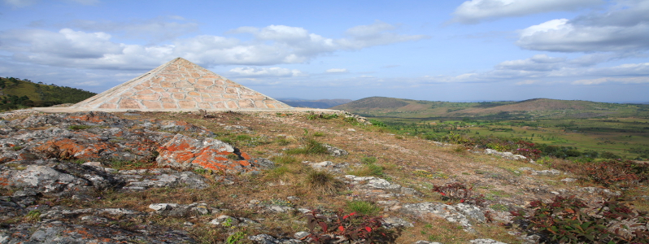
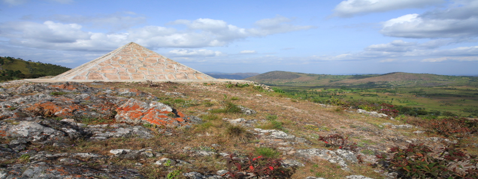

INGOMA Safaris specializes in offering customized-guided tours of these different areas.

 



Lake Tanganyika
Older than 12 million years, Lake Tanganyika is the oldest African Rifts Valleys Lake. It is the second largest lake in depth after Lake Baikal in Russia. About 800 km long and 50 km wide, in some places it reaches depths of 1,435 meters. With 18,800 km3, this lake is the largest reservoir of fresh water in Africa. It drains a catchment area of about 220,000 km2. It is fed by many tributaries; the most important are the Rusizi (which drains Lake Kivu) and Malagarazi which drains the western Tanzania. Its outlet is the Lukuga River.
This ecosystem contains a remarkable fauna. In most species of cichlid fish (over 250 species), it houses collections of other non-cichlid species (over 145 species) and invertebrates over 60 species of gastropods, more than 15 species of bivalves, plus 69 copepod species, over 20 species of lick, 84 ostracods, 15 species of decapods and over 9 species of sponges.
If closely related species of cichlids from Lake Tanganyika are known worldwide, three non-cichlid species are of particular interest: two species of Clupeidae (sardines) and Latesstappersi dominate biomass and are the target of industrial and artisanal fishing lake. With more than 1,300 species of vertebrates and invertebrates, this lake is one of the world's richest freshwater ecosystems. Of these, 500 are endemic to.
Also, Lake Tanganyika has been for a long time a way of sizeable market for the riparian countries. Indeed, in the mid 19th century, products (cotton, son of brass beads) from the Indian Ocean passed by the lakeside path. And since then, it still plays an important role in the economy.
Initiatives are taken to safeguard it by the riparian countries, including: a Strategic Action Plan for the Sustainable Management of Lake Tanganyika and subregional Convention on the Protection of Lake Tanganyika ratified by Burundi on 22 July 2004.
Despite threats (factors of erosion, pollution, sedimentation and fishing techniques) facing Lake Tanganyika, it retains its integrity because of its natural appearance characterized by an extremely rich and complex biodiversity, with more than 1500 species plants and animals almost half of which are endemic.
Lake Tanganyika is part of the Western Rift Valley lakes of East Africa. This lake is known for its natural appearance characterized by an extremely rich and complex biodiversity: 4500 species of plants and animals which nearly half are endemic to the ecosystem, a vital water source for local residents of the lake.
The natural reserve of the Rusizi
Established in 1980, the Rusizi National Park is spread over the provinces of Bujumbura Rural and Bubanza an area of 9,000 hectares. Following the land, the site now covers 5932 ha.
The Palmeraie Area
This reserve is a natural area of exceptional value because it meets a concentration of fake palm trees, Hyphaenabenguellensis var ventricosa and 1000 different plant species. They are four formations: the training Hyphaenebenguellensis var ventricosa occupant près 1200 ha along the Rusizi river xerophytic thickets Cadabafarinosavar. adenotricha and Commiphoramadagascariensis, a sclérophyle Euphorbiadawei forest and steppe Bulbineabyssinica and Acacia hockii. These palms bear fruit in the form of seeds with a shell whose nucleus has the color of ivory. It is also called "vegetable ivory".
The Delta Sector
It is a resting place for large groups Dandrocygnes (Dendrocygnaviduata and Dendrocygnabicolor). It has other advantages: breeding species of migratory birds, a favorite spot for nesting shorebird species as Himantopushimantopus and Vanelluscoronatus, waterfowl.
The Delta area is also a pilot site for protection under the Ramsar Convention, which calls for the protection of wetlands.
The Rusizi Natural Reserve keeps its integrity. The Palmeraie area of particular importance at the wild plant diversity that is the only area of the protected area of the country where a concentration of fake palm trees, Hyphaenabenguellensis var ventricosaIbikoko which is endemic is found, hence the local name Rukoko.
The natural reserve of the Rusizi reminds the other parks on Lake Tanganyika as Sumbu National Park in Zambia and the Gombe Stream National Park in Tanzania, but it is distinguished by the presence of fake palm trees, Hyphaenabenguellensis var ventricosa .
National park of kibira
Created December 12, 1933 by the order of Ruanda-Urundi No. 83/bis/Agri, National Park Kibira was established as a forest reserve in Congo-Nile. As for all protected areas, national park Kibira was institutionalized by Decree-Law No. 1/6 from 03 March 1980. It extends south to Bugarama the border with Rwanda to the north over a distance of roughly 80 km and an average width of 8 km. Its area is about 40,000 ha.
He then joined the Nyungwe Forest in neighboring Rwanda. It spreads on Muramvya, Kayanza, Cibitoke and Bubanza at an altitude between 1600 and 2600 m. The National Park is a Kibira African montane forest composed of three remaining forested areas and a diverse ecosystem.
On an altitude between 1100 and 1600 m, there is a clear forest (Albizia Entadaabyssinica, Proteamandinsis) while on the tops of ridges Mumirwa and high hills Mugamba a rainforest mountains and galleries observed submontane . On the eastern slope of the ridge, the forest is partially up the bamboo-dominated Arundinariaalpina. Along the ridge are the remains of Afromontane forest dominated by Prunus africana, Entandrophragmaexcelsum, etc. Parinariexcelca. The top of the ridge is covered by xerophytic vegetation Philipiaerica, Vaccinium, and Agauria Struthiola. It is a forest composed of several stages related to altitude.
This protected area, a rich and varied biodiversity, is a natural site in which there are thousands of species of fauna and flora very diverse and many of them are endemic. We meet insects, primates, birds, reptiles, large mammals etc...
Many rivers have their sources in the park. This plays an important role in the basins of the Nile and Congo rivers to the Mediterranean and the Atlantic Ocean. It has a notable influence on the hydrological regulation and protection against soil erosion.
In this national park Kibira it also differs from edible plants (wild strawberries (blackberries). Myrianthusarboreus (amufe) and medicinal the edge of the forest there are hot springs called amahoro, amashuha It is a place that is. Frequented for its therapeutic benefits.
The National Park consists of three Kibira forest areas intact ecosystems diverse. Registered in the publication of the International Union for Conservation of Nature (IUCN) since 1996, it meets the criteria for classification as national parks all protected areas in the country. All hunting, fishing, gathering and mining is prohibited there, tourism is regulated with a layout of a circuit. Under these conditions, the National Park Kibira keeps its original features. The only disturbances observed during the crisis of 1993 were related to logging, the clearing, forest fires and mining and quarrying.
Another feature of the conservation of the national park is Kibira association managers and the local population in a fashion awareness of sustainable use of forest resources.
National Park Kibira like the forest of Nyungwe in Rwanda which is the extension. But the characteristics of this park stand, among other things, the presence of different exotic installed blocks Tempon-planting over 2000 ha and 49 ha for forest enrichment.
National park of Ruvubu
Spanning four provinces and eight cities, the National Park Ruvubu was created in 1980 by Decree-Law No. 1/6 of 3 March 1980 on the advice of a recommendation MAB (UNESCO). It covers an area of 50,800 ha and extends over a length of 62 km in its main axis and a width varying between 5 and 13 km. It is located in the lower valley of the river that drains Ruvubu nearly a third of the area of Burundi and is the southernmost tributary of the Nile Basin. This park is a savanna tree and shrub 75%, 15% forested 8% and 2% grassy forest galleries.
From a geological point of view, the schistose rocks interspersed with bands of quartzite are widely prevalent and particularly intrusive granitic formation.
The phytogeographical analysis shows that the park is mainly covered savannah tree to Parinaricuratellifollium, Pericopsis, Angoleusis and Hymenocardiaacida. Its low fund is Cyperus papyrus. The forests consist of Macaranga spinosa, or Anthocleistaschweinfirthii Uapacasp. Vegetation are at least 300 species and some are related to the particular altitude Philippiabenguellensis, Acacia abyssinica, Faurearochetiana, Vernonia chtobocephala and several terrestrial orchids on the high peaks above 1,600 m.
Its rich fauna is confirmed by the presence of 44 species of mammals belonging to 18 families among others Bovideae and Veverridea. Large populations of mammals related species like Synceruscaffer, Kobusellisiprymnosdefessa and Canisodustus. Among the large predators are the leopard (Panthera pardus), wild dog (Lycaon pictus), spotted hyena (Crocutacrocuta).
On the ornithological a list of 425 species exist in the National Park Ruvubu. Bird distribution is linked to vegetation type. This list consists of a rich aquatic birds typical for most aquatic environments for Eastern and Southern Africa. The avifauna of the natural forest is very rich in various mountain elements.
A population of reptiles including plenty of crocodiles (Crocodilusniloticus) and ophidians more than 9 species is very rich in this park. Snakes are also abundant.
It also has 14 species of fish, Barbus is the most represented. The inventory of amphibians reveals the presence of species such as Ptychadenauzunguensis, Ptychadenaloveridgei and Bufo maculatus.
National Park Ruvubu is a site of exceptional value because of its large wildlife and viable savannah. It is the only site in Burundi where there are buffalo (waterbuck waterbuck), roan, waterbuck (Cobe redunca) and red colobus. It is also a site-dependent bird species:
- Large mammals, birds are especially large vultures, raptors and some picnic beef;
- The specialized frugivores and granivores; ago as a bird, the red-faced barbet (Lybiumrubrifaciées) and inseparable (Agapornispullaria);
- Subservient to the gallery forest at medium altitude as winged Robin-Chat (Cossyphapolioptera) that does not exist in the forests larger birds;
- Strictly subservient to the papyrus swamps as the yellow warbler marshes, the papyrus gonolek warbler and white-winged birds;
- Related to the river as the azure kingfisher (Alcedoquadribrachys), the blue-breasted martin hunter (Halcyon malimbicus) Pell's fishing owl (Scotopeliapeli and Pratincole (Ephippiorhynchussenegalensis) species;
- Birds related to floodplains, as the crowned crane (Balearicapavonina), the woolly-necked stork (Ciconiaepiscopa) and jabiru Africa (Ephippiorhynchussenegalensis)
Gasumo, The most meridionale source of the Nile
Long of 6671 km, the Nile River flows through six African countries: Burundi, Rwanda, Uganda, Tanzania, Sudan and Egypt. It is the longest river in Africa. Its source has long been known. From the point of view of history, Ptolemy, a Greek geographer of the 2nd century believed that this source was in large snowy mountains surrounding the equator and the melting snow in the fed lakes to the north, where came two rivers which together formed the Nile. Until the 15th century, knowledge does not progress and the hypothesis of Ptolemy was maintained.
It was not until the 19th century that the English embark on difficult expeditions to unravel the mystery of the source of the Nile. The Royal Geographical Society has funded several expeditions from Zanzibar. In 1858, after 6 months of exploration, Richard Burton and John Speke discovered Lake Tanganyika. Speke later discovered another even bigger lake he named Lake Victoria in honor of the Queen of England and thought and have found the source of the Nile.
In 1860, search parties Speke, Samuel Baker and his wife Florence discovered a river connecting Lake Victoria to Lake Albert and regarded as the source of the Nile. Meanwhile, the missionary and explorer David Livingstone claimed that Lake Tanganyika was a source of the Nile. A little less than a century later, in 1934, the explorer discovered BurckhartWaldecker, Burundi, Gasumo, the southernmost town in the source Rutovu in Bururi province.
It is a trickle of water coming out of the north side of Mount Gikizi 3 ° 54'47'' south latitude, in the commune of Rutovu Burundi. He continued his career in the Gasenyi Rivers Kigira, tributaries Ruvyironza. The latter in turn empties into the Ruvubu whose waters join Nyabarongo to form the Kagera main tributary of Lake Victoria. The waters of Lake Victoria in Jinja out and up the White Nile. The waters from Ethiopia arrived in Khartoum by the Blue Nile. In this city, the Nile is constituted by a single river and through Sudan and Egypt before emptying into the Mediterranean Sea. This river has the attention of the international community through projects Nile Basin Initiative (NBI) Basin.
The Nile River can be compared to the Niger River. This is the largest river in West
The falls of Karera and Nyakazu's fault
On the massive Nkoma located in the province of Rutana southeast of Burundi, stand two outstanding natural features. On the one hand, falls and cave Karera and secondly the fault and forest Nyakazu.
fall and Cave Karera
Southeast of Burundi, in the province of Rutana town Mpinga-Kayove ,on the hill Shanga, are the waterfalls and cave Karera.
1. The falls
These falls are oriented from north to south and stretch over 142 hectares. They are subdivided into six branches spread over three levels..
On one level, is a major fall divided into two parallel branches of an estimated 80 meters which flows from a pool length. This drop includes several waterfalls of various sizes interspersed with two platforms. To the west of this main fall is another smaller waterfall about 50 m. The waters of these two falls converge on a second level to form the third waterfall that flows over the valley. These waters flow through a gallery forest surrounded by savanna and Parinaricuratellifolia Pericopsisangolensiset large trees such as Newtoniabuchananii.
Since 1980,falls and cave Karera were established in protected areas.
2. The Cave
It is located at the point of falling raw waterfalls. This cave is a place of worship where people of difféntes regions come to collect.
Home of infrastructure and access to the various levels have been established, including location of benches to observe the different falls.
The Nyakazu fault
The Nyakazu fault opens Kumoso depression. It is a notch in the massive Nkoma overlooking the plain and extends to the border with Tanzania. This issue is of recent tectonic and covers 600 ha. It has a unique structure and there are historical remains of a German fort.
There is also a seasonal imposing a height of over 100 m that flows over a valley covered with forêt constituée different species including Entandrophragma excelsum fall. Around the fault, there is a clear forest à Brachystegia. This is a conservation area of high altitude trees which enjoys a special microclimate.
Wildlife species are not all inventoried, but we can observe mammals and bird species. The remains of the fort is a historical German prestige, an impressive structure.
The falls of Karera at Shanga and fault Nyakazu remain intact because of their natural look. The site is maintained by INECN and access routes and other amenities are designed to allow easy site visit.
We can compare Karera waterfalls with a height of 80 m of Niagara USA and Canada consist of cataracts by 51 m high in the U.S. and 49 m in Canada. Both have respectively 790 m and 305 m in front.
The flaw Nyakazu recalls the great Midori fault occurred during the earthquake of 1891 in Japan, but that Nyakazu stands out for its length of 112 m.
Rwihinda, Bird's lake
The North of Burundi, on the border with Rwanda, a series of eight lakes offers an impressive natural spectacle: Cohoha, Gacamirindi, Gitamo, Kanzigiri, Mwungere, Narungazi, Rweru and Rwihinda, these lakes are part of the watershed of the Nile River.
The lake Rwihinda, called "Bird’s Lake," is one of the eight lakes. It covers an area of 425 hectares and constitutes the place of passage and hibernation for the migratory birds, about 20 species. These birds come from Europe, arrive at the site in December and will return in April.
The lake has a central island called (Akagwa) and a secondary floating peat islands called (ibishinga), moving into the lake by the wind, forming a preferred habitat, a spawning and nesting migratory birds. The ecological richness, specificity of the lake consists of aquatic plants such as water lily, Potamogeton and marsh plants such as papyrus.
It also counts reptile such as Dasypeltis scabra, amphibians and specific fish. Across the lake we observed a savanna composed of some Acacia trees and Combretum.
Despite some threats to the lake Rwihinda including drying due to climate disruption, the lake Rwihinda retains its integrity because of its natural appearance characterized by natural vegetation of the lowlands, woodland with trees and floating plants. However, this lake received threats related to pollution from human activities, the gradual disappearance of species of trees (Acacia, Combretum), waterfowl (crowned cranes, red Flamengos) and fish.
The lake Rwihinda has unique characteristics compared to other (located in the territory of Rwanda near the border with Burundi), although it is located in a very natural environment.
The Royal residence (Gishora)
Burundi was an organized monarchy since the 15th century until the proclamation of the Republic of Burundi on 28 November 1966.
At the time of the monarchy, each king (umwami) had capitals (Mbuye, Muramvya Kiganda, Humure, Bukeye ...) scattered around the country. They were more concentrated in the region Muramvya. At the end of each year, the royal court organized the festival of planting sorghum (umuganuro) attended, among others, the ritualistic Gishora.
The royal domain Gishora was founded by mwami NtareRugamba in the first half of the 19th century after his victory against the rebel leader Ntibirangwa. It is located on the top of the hill in the town of Gishora Giheta 7 km from the town of Gitega.
1. The royal residence or Ingoro
The specificity of the royal residence lies in its architecture and construction technique. The case is an example Gishora. Indeed, royaleest residence consists of three unequal classes. In the residence of Gishora the premièrecour or forecourt, called intangaro, the shrine of the sacred drums. The second largest of which is the royal court, including the royal residence (ingoro). At the time, the court was usually occupied by the chefs and backyard (ikigo) includes accommodation servants, box of worship (indaroyaRugabo) and attics. This court was only reserved for the royal family. Before entering the residence, there was a public place called home inama. This place served as a first waiting for all those who came to the court.
The uniqueness of the royal residence (ingoro) is characterized by its technical construction. The circumference of the residence is traced through two units related measures called itambwe (a unit of measurement equal to one lay face down on the floor and arms raised man). Then plant a number of piles and poles (poles Markhamialutea, Spathodeanilotica). We dig, every 30 to 40 cm, holes 50-60 cm deep to receive 45-60 vertical piles 2 m high, between which plant 120 to 200 long poles (about 4 m) that will support the roof. Once the stakes and poles are placed, they are bound by a first horizontal doubled torus encircling the building. This core is composed of a core of papyrus reeds sheathed finely woven.
At the same time, another team manufactures the inner part inside the roof construction. This underlay is the most original part of the royal house. The vaulting braid as a backplane reversed using a reed papyrus. This cap is centered on a pole height of a man is gradually added to it by following three concentric hoops manufactured outside assembled every 20 or 30 cm. The whole is raised progressively to its enlargement split poles by becoming longer and consolidated by radial rods. When the dome is approximately the diameter of the case, it is definitely drawn to the desired height using 13 pillars ending in hooves ridge pegged finely decorated by pyrography. While the lower part is firmly connected to the top of the posts at the main torus.
It is only then that folds the outer poles of the dome to link them to a height of 3.40 m, determining the curved frame of the royal house. The cover is made with care by specialists. They first conducted a band of 3 to 4 cm thick sheaves related every 30 to 40 cm core base. Then they cover all the thatch from the top without the tie, throwing five cords.
The last step is to plant the nerve (igisenge), braided with papyrus and secured by a pin of wood on top of the house. It builds thereafter the doorway and awning. Jamb, consisting of four uprights Bamboo meter driven into the ground and surrounded by a bundle of fine art by bamboo tied with cords of papyrus supports an arched lintel of the same design.
The thick straw canopy, finely combed and smoothed to pruning, a direct descendant of the dome and extends slightly on both doors very low (80 cm) (main entrance and the opposite for the rear yard) contributing to the thermal protection. The main entrance is facing south.
The interior of the royal residence includes reception room, living room with an original fireplace crown which has a cylindrical pottery one meter down in the ground and a large buffet, uruhimbi diameter (plan drawn bamboo ) and finally the king's chamber and separated by a wall of papyrus and banana stems pierced by a small window queen. It allowed the king to observe everything that was happening in the room.
The ingenious weaving tori and its attachment to the frame and the game pillars constitute the exceptional setting of this royal residence Gishora.
2. The sanctuary of sacred drums
The shrine is a sacred drum housing (inzu) having a single room that serves Palace drums (ingoro y'ingoma) used for ritual purposes. It houses two sacred drums (Ruciteme and Murimirwa) lying on a bench and facing the entrance and the other drums placed vertically on the floor. The Batimbo, ritualistic region and bearers of this heritage, the drums brought to the royal court on the occasion of the celebration of the annual festival of sowing (umuganuro).
The sanctuary is also built on the same principle as the royal residence, but has less finesse. Indeed, its supporting structure consists of a small woven basket vault (papyrus) is surrounded by a thin spiral hoop (seven to eight turns) whose core is sheathed palm papyrus cords. Also, five double concentric hoops or triple liaise with the arch of the roof frame which is also a cluster of palms, but where the cladding is replaced by simple ligation of papyrus. The thatching is dressed in a sort of dry papyrus mat woven with strings of the same plant. There is only one door.
3. The house servants
This simple house is built on the same principle as the previous and has no specific setting.
Any concession of residence Gishora is protected partly by trees such as Erythrina (protective trees) leficus (used for making clothes) and dragon and secondly, by a natural barrier to base of reed stems.
This site, under the Ministry of Education and Culture, is managed by the ritualistic, the Batimbo belonging to lineage Banyagisaka. These ritualistic families are both manufacturers and specialists percussion drums. They beat the drum regularly on this site, including weekends.
The top of the hill is the Gishora iconic place where the king (umwami) NtareRugamba staying in part. Although his home was restored by the same specific materials in the construction of the royal era, it has retained its original character. However, the residence Gishora is threatened by the deterioration of the thatched roof.
We can compare the royal residences of Burundi places of worship Kasubi in Uganda, by their similarity in construction technique.
Natural sacred landscapes of Muramvya, Mpotsa and Nkiko-Mugamba
1. Induction route of "bami" (kings)
The successor of the King (umwami in singular abami in plural) should be inducted following a specific ritual. Indeed, after the king's death, while the ritualistic Biru manning the royal remains, the court staff would organize a mourning Mwihangarizo where chefs flocked and stayed until the enthronement of the new king. The site Mwihangarizo (Shombo area, common Muramvya) was the starting point of the route of the procession of the enthronement of the new king.
The end of the mourning was going to water provided in the stream Gahororo Musongati the hill, near the confluence of the rivers and Mucece Nyavyamo: the future king, the court staff, princes, chiefs, headmen and livestock descended from Mwihangarizo to visit this confluence area where the ritual was induction.
After the lifting of mourning, the new king crossed the Nyavyamo sitting on the bull Semasaka River, and thus was proclaimed king of Burundi. The procession then went up the hill and Rubumba King planted on top of it a grove composed of plants such as Erythrina (umurinzi) ficus (umumanda), the dragon (igitongati). The traces of these symbols are now visible. The monarch was heading in a festive atmosphere to Kivyeyi through the hill Nkondo. The king spent 4-7 days and ritually united with Mukakaryenda. The monarch received gifts of livestock that in turn redistributed and blessed fire (symbol of royal authority and life) and seeds (a symbol of fertility and prosperity.) Finally, the royal procession was headed Mbuye where a new vestal (Mukakaryenda) was presented to him.
The enthronement of a king and allowed the country to relive because with the death of such an authority, all activities were stopped. This ritual brought joy in the country.
Traces of this route are still visible especially Mwihangarizo to Rubumba and Kivyeyi where we find ficus and dracaena.
2. The royal capital of Mbuye
After induction, the king would reside in its "capital". Indeed, every ruler of Burundi were "capital" in the kingdom whose traces are currently materialized by ibigabiro composed mainly of ficus (ibivumu) of dragon (ibitongati) and Erythrina (imirinzi).
The royal capital is a large courtyard (ikirimba) or rugo including the royal palace, the homes of princes and staff, places of worship, attics and spaces for livestock...
This royal space included three main courses: a large courtyard (intangaro) housing the royal cattle (Inyambo), a second court called inyubakwa containing the royal palace (Nyamugari) and a third court (ikigo) playing an economic and religious role.
The royal capital was also a center of attraction for the whole kingdom. Delegations of leaders with their subjects were there, camps warriors of visitors who came to ask for favors. The main political capitals were in the current Muramvya including Mbuye in Muramvya to Bukeye and Kiganda. It is in these capitals that the king celebrated the annual festival of sowing (umuganuro). Other royal rugo were in other parts of the country.
The royal domain Mbuye was the royal residence of the kings Ntare Rugamba, Mwezi Gisabo and Mutaga Mbikije. It was run by the clan of Bajiji. The king dispensed justice with the participation of heads (abaganwa) and significant (abashingantahe). Activities were coordinated by field managers domains (abishikira). It included a housing complex that can be grouped into two groups: the group and the group Bikinga Muzenga. The first consisted of two rugo King Ntare Rugamba, two and two Mwezi Gisabo Mutaga. The second was composed of des rugo Mwezi Gisabo to Muzenga of Mutaga Mbikije to Munazi and Mwambutsa Bangiricenge to Ruvyagira.
The field Mbuye played an important role in the induction ceremonies for the National Day of sowing in the conservation of the royal drums and education of young princes and princesses. In the early 20th century, this area gradually lost its influence and the monarchy ceased to exist with the proclamation of the Republic of Burundi.
Currently, the area is surrounded by hills Kiziba south Buyaga east, Iteka north Mbuye west.
3. The necropolis of the queen mothers of Mpotsa
Monarchical society in Burundi, the Queen Mother (umugabekazi) was higher than other women political power as his authority was essential for the successful organization of the kingdom. Their reign stopped when the majority of the young king. The queen mother Ririkumutima, wife of King Mwezi Gisabo is well known for his political activities for the youth of the future king Mutaga Mbikije.
Queen Mother died when he was held a funeral ceremony. Queen mothers were kept in Mpotsa in the current common Rusaka in Mwaro province. This site was guarded by ritualistic Banyange, registrants holders sanctuary Mpotsa.
The body was transported to the Bunyange by carriers designated by the royal court to Budidiri Rukiga on the hill, the first resting place of the funeral procession. It crossed the river Mucece, climbed the hill and reached Mahonda Rusaka Bukwavu on the hill. She headed for the hill where Yakiriro holders remettaient the mortal remains to Banyange and returned to Muramvya. The body of the queen spent the night Yakiriro where a palace was built and there was a sacred grove planted. The next day, the funeral procession was going in a festive atmosphere to Mpotsa and Akogabami stopped at the river for purification purposes. Men of secrecy and a servant who came Muramvya washed the body of the deceased with a mixture of milk of a white cow suckling her first calf, sorghum beer in one color and kaolin. Thereafter, the body was driven to the top of Mpotsa where was built a palace with two houses of chiefs Banyange and temporary huts for the guards and their helpers.
In the site Mpotsa four queen mothers have been retained: the mothers Ntare II of Mwezi II, Mutaga Mwambutsa II and II. This site has kept its original character and sacred. It contains medicinal plants quite varied. Traces of these pens queen mothers are materialized by trees such as dragon (ibitongati) ficus (imimanda). Other notable plant species are visible in the rainforest: Albiziaadianthifolia (imisebeyi) Myrianthusarboreus (amufe), Papyrus (imihotora) Clausenaanisata (umutana) Syzigiumguineense (imigoti).
This sacred forest Mpotsa Nyamigogo is surrounded by hills, Shana, and Nkurunzi Bunyange. Bunyange hill is also famous because there are a source of valued for its therapeutic under water.
4.The royal necropolis of Nkiko-Mugamba
The funeral ceremonies of the kings were also a major in the country. In fact, the king's death, a special ritual was performed. For the people, the king did not die; he gave honey (yiha ubuki). This sad news was brought to the attention of chiefs and Biru (ritualistic funeral) and all activities were stopped.
The kings were kept away from their capital in the region Nkiko Mugamba north-western Burundi. A large procession of different personalities accompanied the remains. The Biru built a mortuary palace into which was fitted a tray on which they laid the body of the deceased sovereign.
The tombs of the first four kings (Ntare Rushatsi, Mwezi, Mutaga and Mwambutsa) are located in the municipality of Budandari Kabarore. Those monarchs Ntare Rugamba, Mwezi Gisabo, Mutaga Mbikije and are located respectively Buruhukiro at Remera and Ramvya in the current common Muruta in Kayanza.
King Mwezi, meanwhile, remains on the hill Remera (sub hill Kirambi Muruta in common). This necropolis (Inganzo) was guarded by Bajiji (Misuzi and his descendants). There are samples of ficus of Erythrina, dragon.
The necropolis is Mutaga Mbikije Ramvya. This is a site atop a hill and is well protected. He was guarded by Bajiji (Nsesanyi his son Nzorubara son and grandchildren). One can see old plant species such as Ficus (imimanda), the dragon (ibitongati) Rhusvulgaris (imisagara) .... There are also animals like antelopes and snakes.
Groves of kings Ntare Rugamba, Mwezi Gisabo, Mutaga Mbikije, Mwambutsa Bangiricenge, the last king Ntare Ndizeye are still visible at the top of the hill Rubumba. They are in a straight position and each identified by a plate. These plant species are found in the necropolis of kings and queen mothers.
This route of induction is reminiscent of the Royal Hill of Ambohimanga of Madagascar which is already on the World Heritage List. A Kiganda, the entire circuit of the induction took place on three hills which are linked: Rubumba, Nkondo and Kivyeyi. At each stage, there were rituals that were performed.
The Traditional Rugo in Mugamba
Country of Hills, Burundi has 11 traditional regions which differ from each other on climate change and orographic map. The region lies on Mugamba Sharing Zone watersheds of the Nile and the Congo. This region is characterized by high relief (2300 m on average) and annual temperatures between 14 ° and 17 ° C.
Given the low temperatures in the region, the population has adopted adobe buildings that can protect itself against these low temperatures and high humidity.
This is a rugo housing unit (inzu) of all members of the same family and is surrounded by a fence (urugo) made of bamboo. It includes:
The main house, round is surrounded by two large speakers defining the front yard (urugo) and backyard (ikigo). The forecourt (ikirugu) serves as parking for livestock. A fireplace (igicaniro) in the center protects pets against these flies. In addition, there is a mast (icishinzo) which rub against the cows. In each chamber, there are houses of smaller dimensions.
Also, we find there the dwelling adolescents, the members of the immediate family and the visitors. A side are attics (ibigega) and a place to worship Kiranga (intermediary between the Supreme Being and men).
The frame of the house consists of a system of rods connected by a horizontal torus (Ikoma) makes souls of reeds and strings coated bamboo. Inside the circle of poles, one braid domed ceiling made of a spiral coil basketry (igisenge) that raises the as its braiding. This ceiling is erected and maintained at desired height (3-5 meters) with pillars (INKINGI) ending in hooves (imyashi) decorated with pyrography patterns. The outer poles are then folded and tied. The whole is covered with stubble cut by men in the marshes.
The interior of the main house was divided into partitions made of bamboo which define the one hand the sleeping hall where young children and also serves as a stable for young calves, and also an alcove which housed the parents. A fireplace (Iziko) formed a cup of clay and dung mixed and three refractory is arranged in the middle of the house. A rack (urusenge) for receiving the clay pots and firewood is built on top of the fireplace. On the right side of the house, a dresser oval (uruhimbi) is built on which ranks milk jugs (ivyakunze) churns (ibisabo) and different baskets (ibiseke).
The decoration of the house is done by women and girls and is to coat the walls of red earth and clay and line the pavement with a thick layer of eragostris (ishinge) well landscaped and covered with mats.
By its natural environment in the hills, the climate and the local knowledge of this type of construction context was saved by the public. It has kept its original characteristics.
This type of houses is very similar to the constructions made in Ethiopia around Lake Wanchi. This type of habitat is also present in Rwanda.
Abatimbo
Le tambour est une partie importante de l'héritage culturel burundais. Le célèbre Royal-Tambours du Burundi, qui s'est produit plus de quarante ans à travers le monde entier, est connu pour ses tambours traditionnels comme les Amashāko, les Ibishikiso, l'Inkiránya et Kirotsa, le petit tambour. La troupe se produit toujours, sur l'ancien site royal de Gishōra, situé à quelques kilomètres (10 km précisément)au nord de Gitéga, la seconde ville en importance au Burundi. La danse accompagne souvent les performances du tambour, musique populaire des célébrations et réunions de famille. Les Abatīmbo, dont on joue lors des cérémonies officielles et des rituels, et le rythme rapide de l'Abanyagasīmbo sont de célèbres danses burundaises. À noter également l'Umwĭrōnge(la flûte), l'Ikēmbe, l'Indonōngo, l'Umudúri, l'Inānga (la cithare)etc… La réputation des tambourinaires a dépassé les limites du Burundi pour devenir internationale. En Afrique, ils symbolisent même la bonne orchestration du tambour. Leur art est sacré. Il est aussi profane. C'est un lien mystique entre un pays, un peuple et un instrument. « Ingoma », c'est à la fois le tambour, le départ (" Inkóko ni yó ngoma" : On part au chant du coq), le royaume et l'époque. Les tambourinaires joue aussi lors des fetes,Ils entrent en scène leur tambour sur la tête. Ils chantent en même temps qu'ils dansent. Disposés en arc de cercle autour du tambour central, l'Inkiránya, ils attendent son signal. Alors, groupés en deux groupes, les AbanyaMashāko et les AbanyaBishikizo battent leur rythme dans une harmonie surprenante. Le Tambourinaire soliste, celui qui bat l'Inkiránya ou le tambour central, exécute une danse où se mêlent fantaisie et gravité. Danse guerrière, sa gestuelle est significative. Le soliste par moments mime le geste de se trancher la gorge. Cela traduit son attachement à son pays : « Que je meure si je trahis le Tambour! » Tous les Ritualistes Batimbo le suivent, parce qu'il est considéré comme leur roi et eux ses sujets. Les tambourinaires ou le Ritualistes Batimbo du Burundi manient aussi l'humour, la satire et l'élégance. Le danseur soliste se transforme en un gentil clown marchant sur les mains, empruntant une démarche caricaturale et faisant des clins d'oeil au public. Les Tambourinaires ou les Ritualistes Batimbo du Burundi occupent Ikiránya ou jouent pour le public à tour de rôle. Ils peuvent jouer seul, à deux, à tois voire à quatre. Ils sont en quelque sorte de véritables athètes qui courent, sautent, se tordent le cou et/ou les hanches, font des enjambements, etc. En ce moment, les Tambourinaires qui sont battent les Tambours sautent, chantent, marchent autour des Tambours qu'ils battent tout en suivant la cadence qu'exige la danse de l'artiste qui danse devant eux, leur roi. Aun fond, il s'appelle le roi, car, outre que ses sujets battent les Tambours en repondant à l'invitation du roi, celui-ci peut arrêter la danse s'il est certain que c'est ce qui est nécessaire de faire.
Package Tours (INGOMA Safaris is also offering fully-customized tours)
5 days / 4 nights (half board): Lake Tanganyika - Nile's Source - Gitega & Abatimbo
Transport, accommodation (half board), non-alcoholic beverages and guiding services included.
7 days / 6 nights (half board): Lake Tanganyika - Nile's Source - Gitega & Abatimbo - Parc de la Rusizi - Bujumbura
Transport, accommodation (half board), non-alcoholic beverages and guiding services included.
10 days / 9 nights (half board): Bujumbura - Bird's lake - Lake Tanganyika - Nile's Source - Gitega & Abatimbo - National parc of Rusizi - Bujumbura
Transport, accommodation (half board), non-alcoholic beverages and guiding services included.